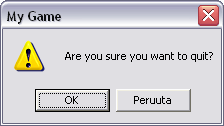

Järjestelmä : komennot
| KUVAUS |
|
Tätä komentoa voidaan käyttää kolmeen tarkoitukseen:
Ikkunan otsikon asettaminen on komennon yleisin käyttötarkoitus. Ikkunoiduissa peleissä käyttäjä voi lopettaa pelin ikkunan X-painikkeesta. Estääksesi tämän (peli on lopetettava sinun tavallasi), voit asettaa erityisen kysymyksen, joka antaa käyttäjän vielä peruuttaa valinta. Kysymyslaatikossa on OK-, ja Peruuta-painikkeet.  Tämän lisäksi ohjelmoija voi suurentaa ikkunan koko ruutuun, palauttaa sen normaalitilaan tai pienentää sen tehtäväpalkkiin. Nämä toimivat ainoastaan ikkunoidussa tilassa. Lisäksi ikkunan ruutuun suurentaminen toimii ainoastaan grafiikkatilassa, joka on esitetty parametrilla cbSizable. Lisätietoja SCREEN-komennon ohjeesta. HUOM! Tämän ominaisuuden väärinkäyttö voi aiheuttaa outoja lopputuloksia. Suosittelemme, että kirjoitat tämän tilalle nollan, jos et tiedä mitä teet. |
| KÄYTTÖ | |
0 = ei toimenpiteitä (oletus) 1 = normaali ikkunakoko 2 = pienennä tehtäväpalkkiin 3 = suurenna koko ruudulle |
| ESIMERKKI | |
|
<<TAKAISIN